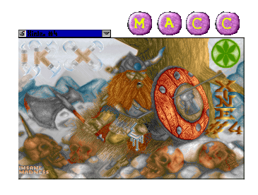
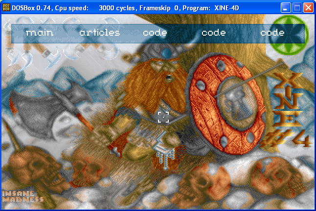

iKx xine #4
Editional
Some people call this file an 'index'
News and stuff from us
Disclaimer
Getting in touch
Greetings and such like
Interview with Super/29A
The history of Grog and his viruses
The short monologue of virus Wendell
Virus + Literature + Music
Why writing viruses?
Articles
A tour over PE infection
Tips and tricks about PE infection
Getting Apis addresses
Paging and fooling debuggers
System Managment Mode
Metamorphism essay
Win32 Anti-Debugging tricks
Companion viruses for 16 and 32 bits
Infecting OBJs
Encryption ideas and theories
Piggyback, *nix prependers
Automating things with expect
Scappa, tcp service scanner
Codes
Virus - The Mole
Virus - The Voodoo virus
Virus - AxelleBailey
Virus - Aldebaran
Virus - Win32.Thorin
Virus - RegIkx
Virus - Win32.Borges v.2.0
Virus - Wm/W32.Cocaine
Virus - Win32.Apathy
Virus - Win95.Poshkiller
Virus - Win95.IceHeart v1.5
Virus - Autoworm
Virus - SV
Virus - Werther
Virus - Win32.Legacy
Virus - Win95.Molly
Virus - Win32.Paradise
Poly - ETMS 0.1
Poly - MMXE
Tool - Spoutnik 2
Tool - Spoutnik 3
Virus - VBvirus
Virus - Albiroja
Virus - Fuxpro
Virus - Tolkien
Spotlite - Peacekeeper
Spotlite - Lithium
Disasm - PME for Windows v0.00
Disasm - Diablo
Disasm - Win9X.Joker
